Recipes Page
Creamy Feta + Roasted Red Pepper Dip
Creamy Feta and Roasted Red Pepper Dip
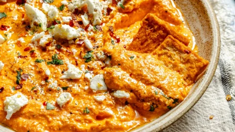
Spicy Roasted Red Pepper Feta Dip
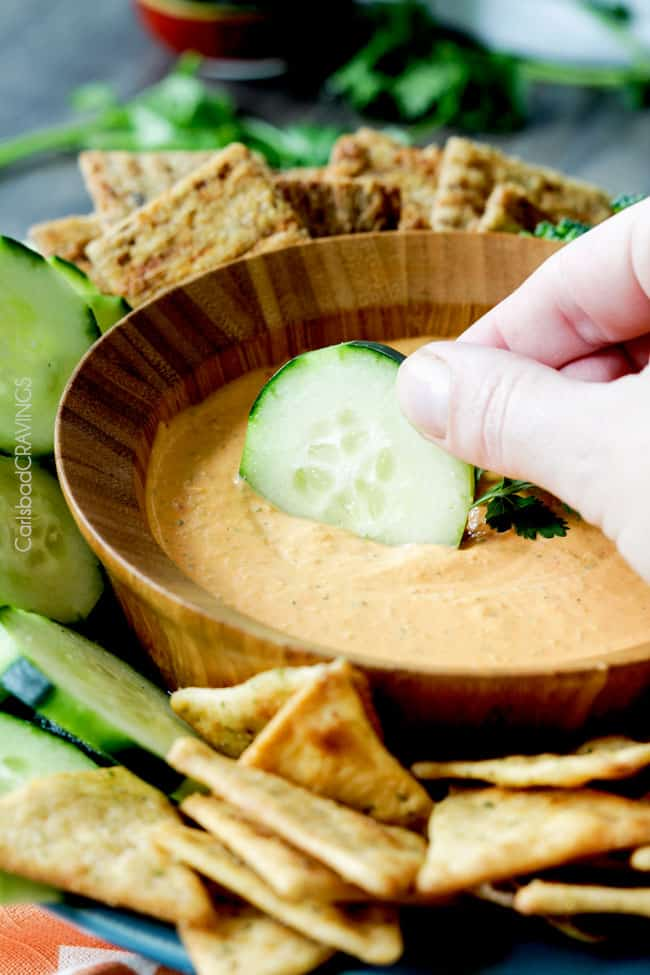
5-Minute Roasted Red Pepper Dip With Feta
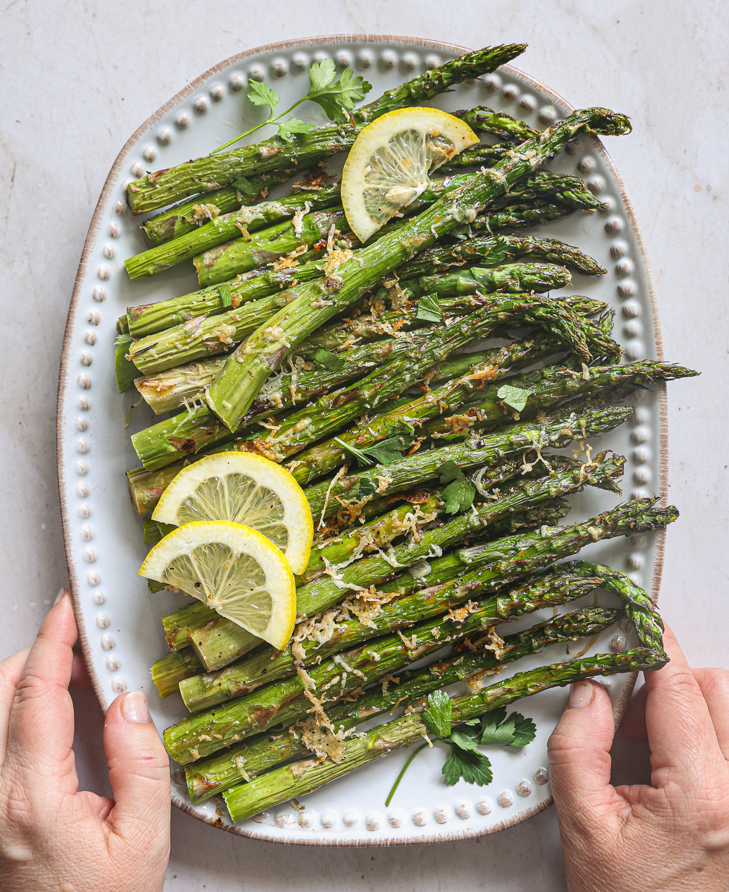
Oven-Roasted Lemon Parmesan Asparagus
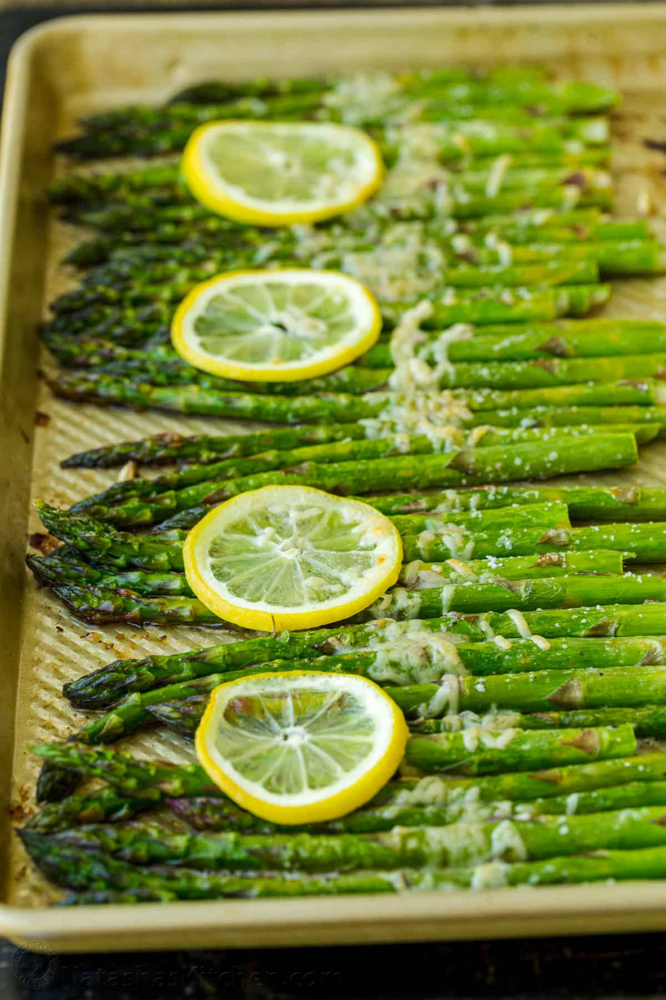
Roasted Asparagus with Lemon, Butter, and Parmesan
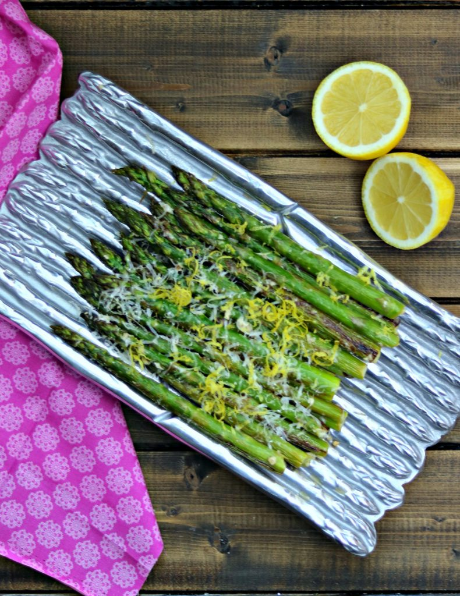
Lemon Parmesan Roasted Asparagus
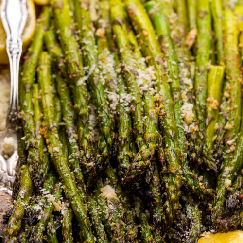
Lemon Garlic And Parmesan Asparagus
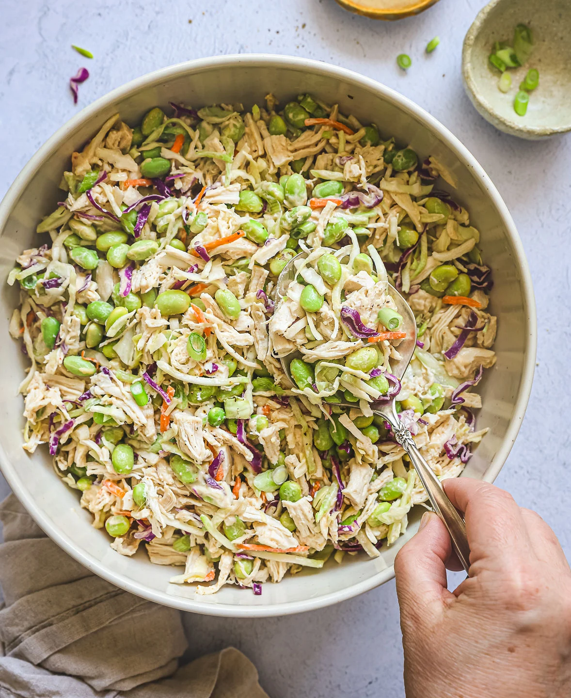
Creamy Edamame Chicken Salad
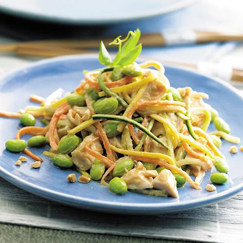
Edamame Chicken Salad
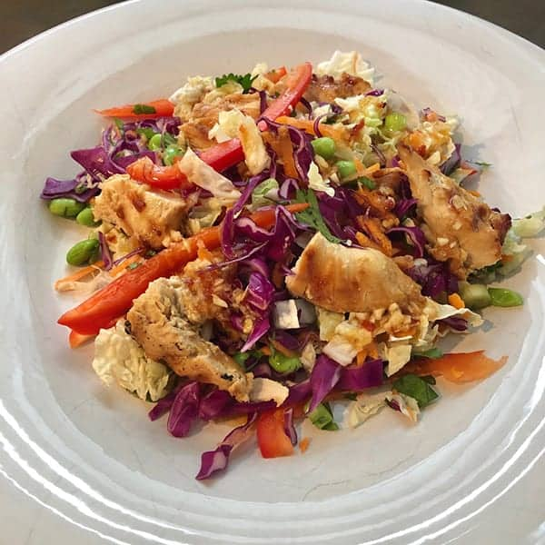
Smart Asian-Style Chicken Salad with Creamy Sriracha Dressing
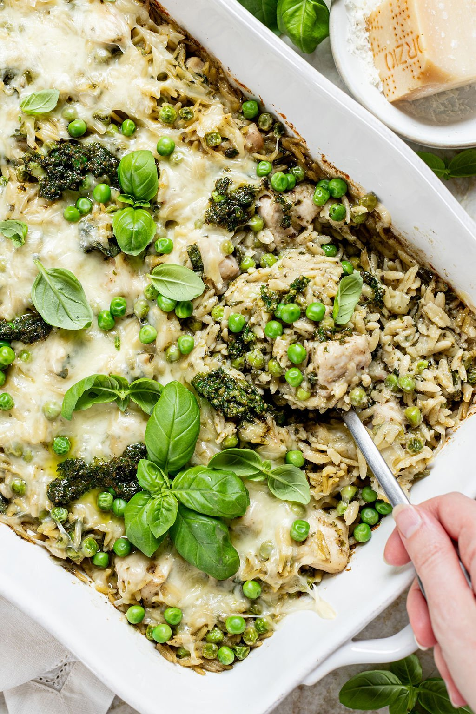
Pesto Chicken Orzo Bake w/ Spinach + Peas
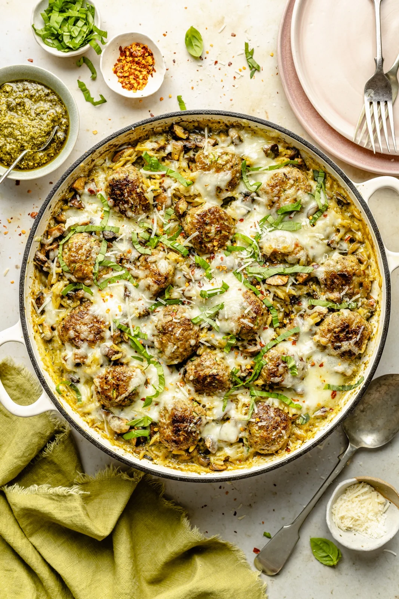
One Pan Baked Pesto Orzo with Chicken Meatballs
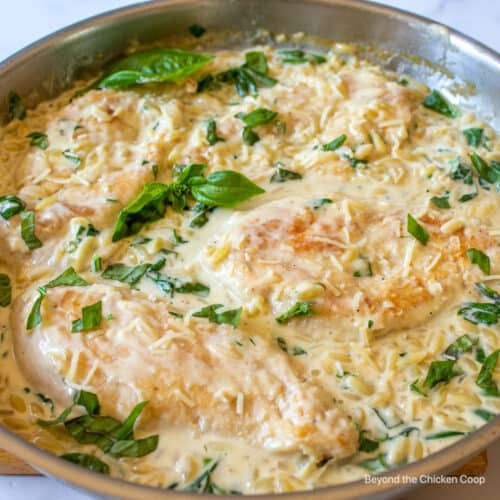
Creamy Chicken Orzo
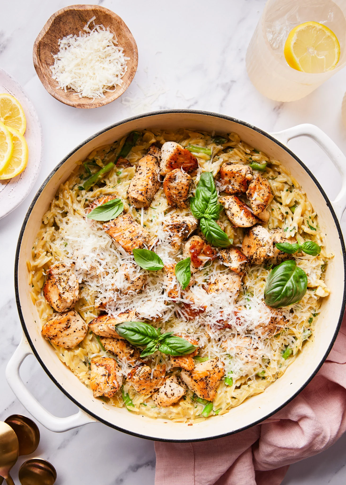
Creamy Green Goddess Orzo with Chicken
Feel-Good Strawberry Rhubarb Muffins
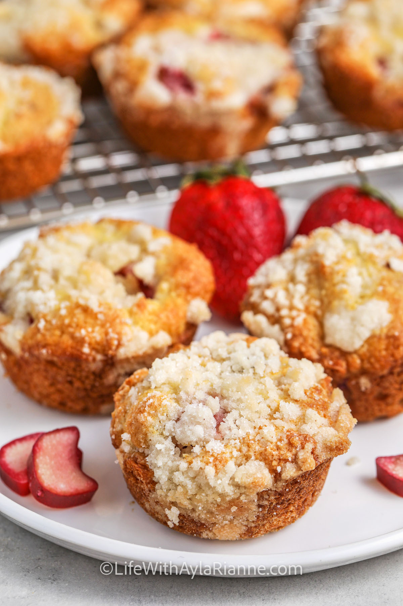
Strawberry Rhubarb Muffins
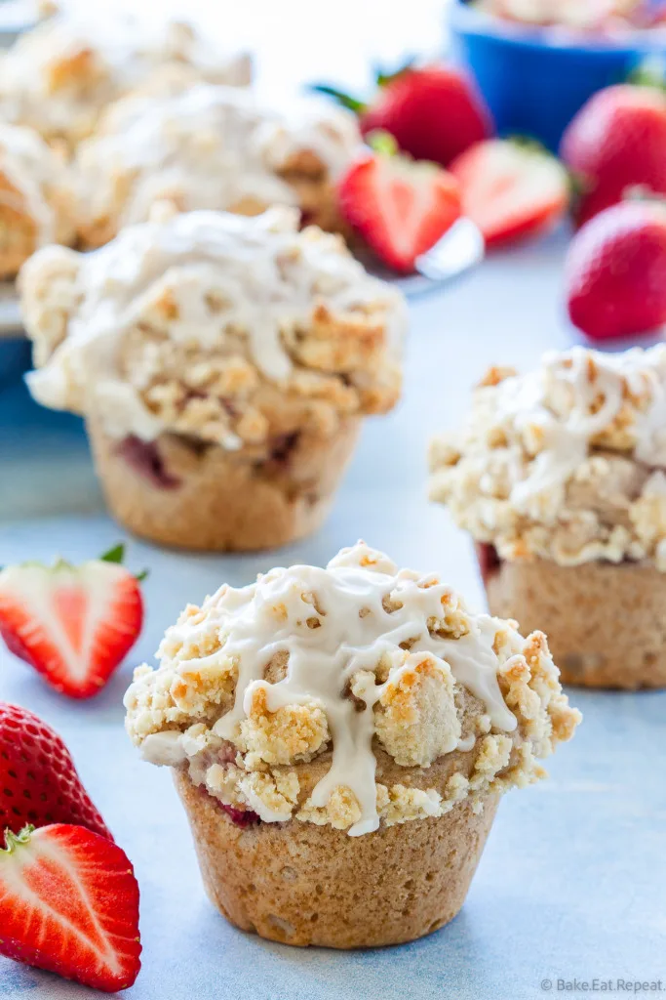
Stacey's Recipe For Strawberry Rhubarb Muffins
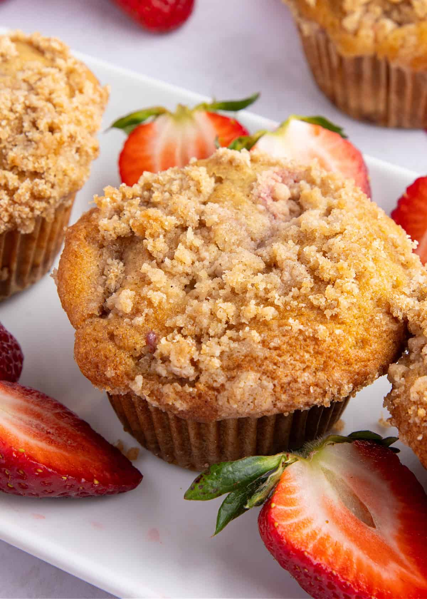
Strawberry Rhubarb Muffins With Streusel Topping
About
Signup
Recipes
Contact
Privacy Policy